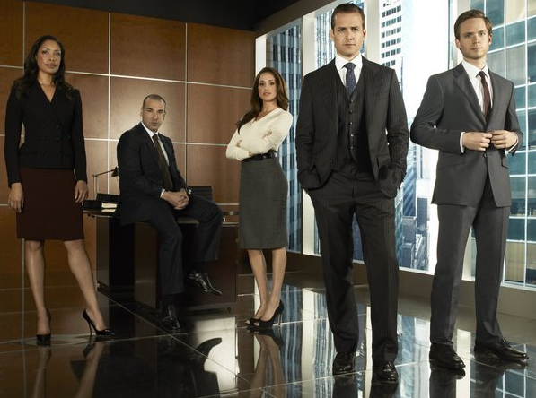

"Suits" inicialmente cativou o público com sua abordagem única do mundo
jurídico, apresentando um ambiente sofisticado e intrigante. No entanto,
ao longo das temporadas, críticos observaram que a série tendeu a se
concentrar excessivamente nos dramas pessoais dos protagonistas, às
vezes em detrimento das tramas jurídicas que inicialmente atraíram os
espectadores. Essa mudança de foco resultou em episódios que pareciam
mais voltados para o desenvolvimento dos relacionamentos entre os
personagens do que para os casos legais em si.
Apesar do elenco carismático, incluindo nomes como Gabriel Macht e
Patrick J. Adams, houve críticas sobre o desenvolvimento inconsistente
dos personagens secundários em "Suits". Enquanto os protagonistas
recebiam grande parte da atenção, outros personagens muitas vezes eram
deixados em segundo plano, com arcos narrativos subdesenvolvidos e menos
cativantes. Isso levou a uma sensação de desconexão em relação a certos
aspectos da série, especialmente quando se tratava de entender as
motivações e os conflitos dos personagens secundários.
br

A estrutura narrativa de "Suits" foi criticada por sua previsibilidade
em certos momentos. Alguns episódios seguiram um padrão familiar de
conflito interno na empresa de advocacia Pearson Hardman, seguido pela
resolução do caso no tribunal. Essa repetição de fórmulas pode ter
tornado a série menos emocionante para os espectadores que buscavam
surpresas e reviravoltas inesperadas.
Embora "Suits" tenha sido elogiada por suas primeiras temporadas, alguns
críticos observaram um declínio na qualidade da série à medida que
progredia. O ritmo frenético das primeiras temporadas deu lugar a tramas
mais previsíveis e menos desafiadoras, levando a uma perda de interesse
por parte de alguns espectadores. Alguns argumentam que a criatividade
diminuiu à medida que a série avançava, resultando em episódios que não
tinham o mesmo impacto emocional ou intelectual que os anteriores.
Apesar dessas críticas, "Suits" ainda é apreciada por muitos
espectadores por sua escrita afiada, diálogos inteligentes e
performances cativantes do elenco principal. Sua capacidade de misturar
drama jurídico com elementos de relacionamento pessoal continuou a
atrair uma base de fãs dedicada ao longo de suas nove temporadas.